Introduction
The sspLNIRT package provides sample size planning tools
for item calibration under the Joint Hierarchical Model (JHM; van der
Linden, 2007). The JHM combines a two-parameter normal ogive model for
response accuracy with a log-normal model for response times, estimated
via Gibbs sampling through the LNIRT package (Fox et al.,
2023).
The central question the package addresses is: Given assumptions about the data-generating process, what is the minimum number of respondents needed to achieve a desired level of item parameter accuracy? Accuracy is defined as the root mean squared error (RMSE) of a target item parameter falling below a user-specified threshold.
The package supports three workflows, each described in a separate section of this vignette:
- Shiny app — an interactive interface for exploring precomputed results or generating a customized R script.
- R package with precomputed results — programmatic access to a database of 2,400 precomputed design conditions, with functions for retrieval, inspection, and visualization.
-
Custom simulations — running
comp_rmse()oroptim_sample()for design conditions not covered by the precomputed grid.
# Install from GitHub
if (!requireNamespace("devtools")) install.packages("devtools")
devtools::install_github("anonymous-peer-2026/sspLNIRT")1. Using the Shiny App
The package includes an interactive Shiny application that provides the most accessible entry point. Launch it with:
run_app()The app allows users to:
- Select design parameters (test length, mean item discrimination, residual variance level, ability–speed correlation) and target RMSE thresholds via dropdown menus.
- Retrieve the corresponding minimum sample size from the precomputed database, together with estimation metrics (RMSE, Monte Carlo SD, bias) for all item and person parameters.
- Inspect diagnostic plots including estimation accuracy across parameter values, power curves, convergence diagnostics, and simulated response accuracy and response time distributions.
- Download the result objects (
.rds) for further use in R.
For design conditions not covered by the precomputed grid, the app can generate a customized R script with the appropriate function calls, which can then be executed locally or on a computing cluster. Detailed documentation of the app interface is available at https://github.com/anonymous-peer-2026/sspLNIRT/.
2. Using Precomputed Results in R
This section walks through the full workflow for retrieving and inspecting precomputed results programmatically. The precomputed database covers 2,400 design conditions; if your specification falls within this grid, no simulations are needed.
2.1 Check available configurations
Start by inspecting which design conditions are available in the
precomputed grid using available_configs():
configs <- available_configs()
head(configs, 10)
#> thresh out.par K mu.alpha meanlog.sigma2 rho
#> 1 0.20 phi 50 1.4 log(1) 0.4
#> 2 0.10 alpha 50 1.0 log(1) 0.6
#> 3 0.10 beta 30 0.8 log(0.2) 0.6
#> 4 0.15 alpha 50 1.4 log(0.2) 0.2
#> 5 0.15 beta 50 0.6 log(1) 0.2
#> 6 0.05 beta 50 1.0 log(0.2) 0.2
#> 7 0.15 alpha 50 1.2 log(0.4) 0.2
#> 8 0.10 lambda 50 1.0 log(0.4) 0.6
#> 9 0.10 phi 50 0.8 log(0.6) 0.6
#> 10 0.05 alpha 50 1.4 log(0.4) 0.6Each row represents one precomputed optimization run. The columns
correspond to the design factors that were systematically varied:
thresh (RMSE threshold), out.par (target item
parameter), K (test length), mu.alpha (mean
item discrimination), meanlog.sigma2 (log-scale mean of the
residual variance
),
and rho (ability–speed correlation). All other model
parameters (e.g., mean item difficulty, item parameter correlations,
standard deviations) were held constant across the grid. Their values
are stored in the design element of each result (see
Section 2.3).
To check the available levels per factor:
unique(configs$out.par)
#> [1] "phi" "alpha" "beta" "lambda"
unique(configs$thresh)
#> [1] 0.20 0.10 0.15 0.05
unique(configs$K)
#> [1] 50 30
unique(configs$mu.alpha)
#> [1] 1.4 1.0 0.8 0.6 1.2
unique(configs$meanlog.sigma2)
#> [1] "log(1)" "log(0.2)" "log(0.4)" "log(0.6)" "log(0.8)"
unique(configs$rho)
#> [1] 0.4 0.6 0.22.2 Retrieve the minimum sample size
The get_sspLNIRT() function looks up precomputed results
by matching on the six design factors. It accepts vectors for
thresh and out.par to target multiple item
parameters simultaneously:
result <- get_sspLNIRT(
thresh = c(0.10, 0.20, 0.05, 0.05),
out.par = c("alpha", "beta", "phi", "lambda"),
K = 30,
mu.alpha = 1,
meanlog.sigma2 = log(0.6),
rho = 0.4
)Because the precomputed database stores results for each target
parameter separately, get_sspLNIRT() matches each
out.par/thresh pair independently. It then
returns the bottleneck result — the parameter that required the largest
sample size, since that
guarantees all other parameters also meet their (less demanding)
thresholds.
The summary() method provides a concise overview:
summary(result$object)
#> ==================================================
#>
#> Call: optim_sample()
#>
#> Sample Size Optimization
#> --------------------------------------------------
#> Min Sample Size: 460
#> Critical Parameter: alpha
#> RMSE at Min N: 0.0984
#> Optimizer Steps: 13
#> Time Taken: 3.901599 hours
#>
#> Item Parameter RMSEs:
#> --------------------------------------------------
#> alpha beta phi lambda sigma2
#> RMSE 0.0984 0.1080 0.0384 0.0442 0.0475
#> MC SD 0.0145 0.0203 0.0060 0.0114 0.0060
#> Bias 0.0003 0.0036 -0.0007 0.0014 0.0249
#>
#> Person Parameter RMSEs:
#> --------------------------------------------------
#> theta zeta
#> RMSE 0.2920 0.2586
#> MC SD 0.0141 0.0177
#> Bias 0.0022 0.0032
#> ---For planning based on a single parameter, scalar inputs work the same way:
res_alpha <- get_sspLNIRT(
thresh = 0.10,
out.par = "alpha",
K = 30,
mu.alpha = 1,
meanlog.sigma2 = log(0.6),
rho = 0.4
)
summary(res_alpha$object)
#> ==================================================
#>
#> Call: optim_sample()
#>
#> Sample Size Optimization
#> --------------------------------------------------
#> Min Sample Size: 460
#> Critical Parameter: alpha
#> RMSE at Min N: 0.0984
#> Optimizer Steps: 13
#> Time Taken: 3.901599 hours
#>
#> Item Parameter RMSEs:
#> --------------------------------------------------
#> alpha beta phi lambda sigma2
#> RMSE 0.0984 0.1080 0.0384 0.0442 0.0475
#> MC SD 0.0145 0.0203 0.0060 0.0114 0.0060
#> Bias 0.0003 0.0036 -0.0007 0.0014 0.0249
#>
#> Person Parameter RMSEs:
#> --------------------------------------------------
#> theta zeta
#> RMSE 0.2920 0.2586
#> MC SD 0.0141 0.0177
#> Bias 0.0022 0.0032
#> ---2.3 Understand the output
The object returned by get_sspLNIRT() is a list with two
elements:
-
result$object: the optimization result (classsspLNIRT.object), containing:-
N.min— the minimum sample size identified by the bisection optimizer. If the lower bound already satisfied the threshold, this is the string"res.lb < thresh"; if the upper bound was insufficient,"res.ub > thresh". -
res.best— the RMSE of the target parameter atN.min. -
comp.rmse— the full accuracy evaluation atN.min, including RMSE, MC SD, and bias for all item and person parameters, as well as binned error data and convergence diagnostics. -
trace— the optimization trace: sample sizes and RMSE values at each bisection step, the number of steps, and the elapsed time.
-
-
result$design: the full set of input parameters used for the precomputation (classsspLNIRT.design). This includes the constant parameters that were not varied across the grid:
str(result$design, max.level = 1)
#> List of 19
#> $ thresh : num 0.1
#> $ range : num [1:2] 50 2000
#> $ out.par : chr "alpha"
#> $ iter : num 200
#> $ K : num 30
#> $ mu.person : num [1:2] 0 0
#> $ mu.item : num [1:4] 1 0 0.5 1
#> $ meanlog.sigma2: num -0.511
#> $ cov.m.person : num [1:2, 1:2] 1 0.4 0.4 1
#> $ cov.m.item : num [1:4, 1:4] 1 0 0 0 0 1 0 0.4 0 0 ...
#> $ sd.item : num [1:4] 0.2 1 0.2 0.5
#> $ cor2cov.item : logi TRUE
#> $ sdlog.sigma2 : num 0
#> $ item.pars.m : NULL
#> $ XG : num 5000
#> $ burnin : num 20
#> $ seed : num 311971
#> $ keep.rhat.dat : logi TRUE
#> $ keep.err.dat : logi FALSE
#> - attr(*, "class")= chr "sspLNIRT.design"Notably, result$design$out.par and
result$design$thresh identify which single-parameter
configuration was the bottleneck:
result$design$out.par
#> [1] "alpha"
result$design$thresh
#> [1] 0.1This tells you which parameter drove the minimum sample size. In the
multi-parameter call above, the returned N.min and all
diagnostics correspond to the optimization run for this bottleneck
parameter.
2.4 Inspect the implied distributions
With the design object in hand, you can inspect what the assumed
parameter values imply for observable data. The plot_RA()
and plot_RT() functions simulate data under the specified
model and display the resulting distributions. Using
result$design avoids having to re-specify all the constant
parameters manually:
cfg <- result$design
sim.mod.args <- list(
K = cfg$K,
mu.person = cfg$mu.person,
mu.item = cfg$mu.item,
meanlog.sigma2 = cfg$meanlog.sigma2,
sdlog.sigma2 = cfg$sdlog.sigma2,
cov.m.person = cfg$cov.m.person,
cov.m.item = cfg$cov.m.item,
sd.item = cfg$sd.item,
cor2cov.item = cfg$cor2cov.item
)Item-level response accuracy. With
by.theta = TRUE, plot_RA() shows item
characteristic curves (ICCs) — the probability of a correct response as
a function of ability
.
Each panel corresponds to one item. The dashed vertical line marks the
item difficulty
(),
and the faint dots show simulated binary responses:
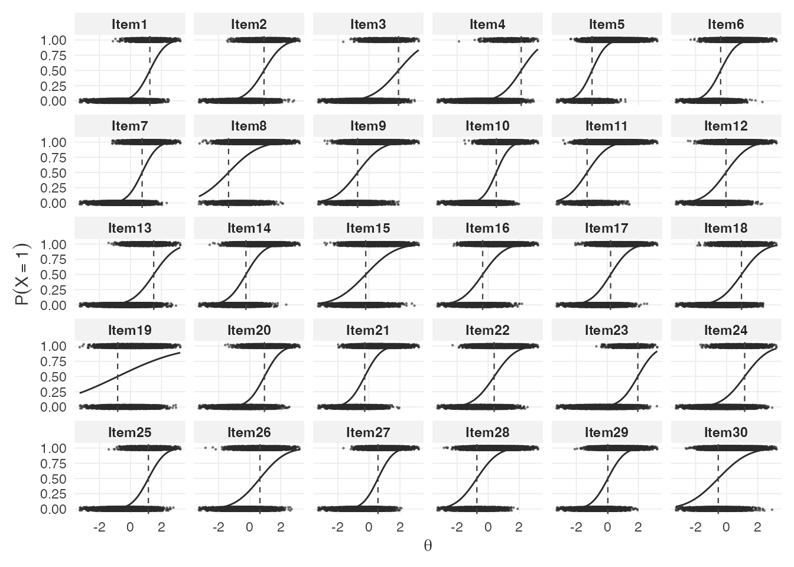
Setting by.theta = FALSE shows the marginal distribution
of response probabilities across persons for each item:
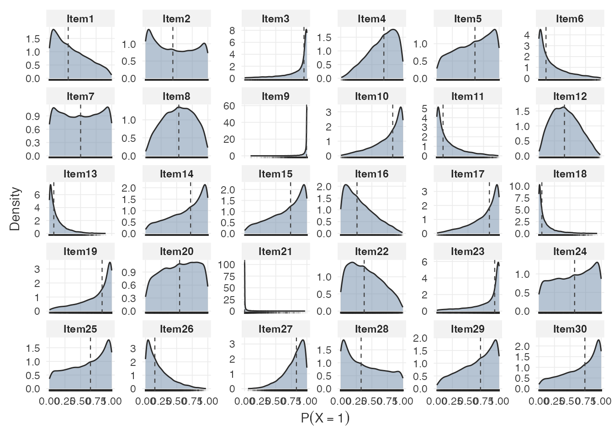
Person-level response accuracy. The total correct score distribution provides a summary of expected test performance:
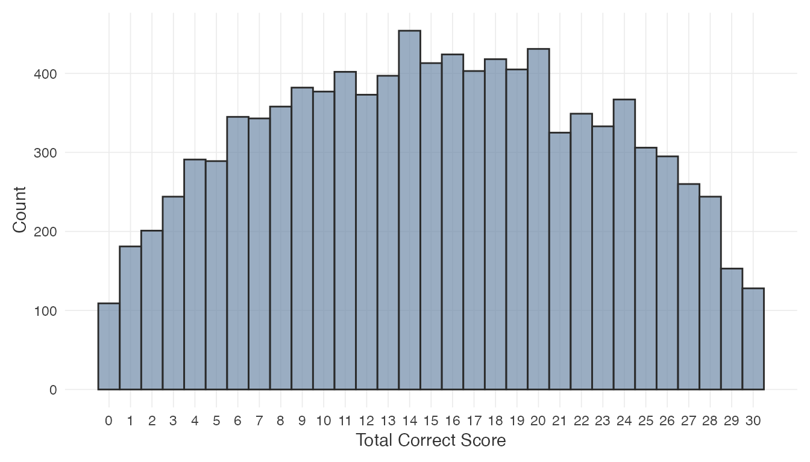
The by.theta = TRUE variant shows mean total score as a
function of ability:
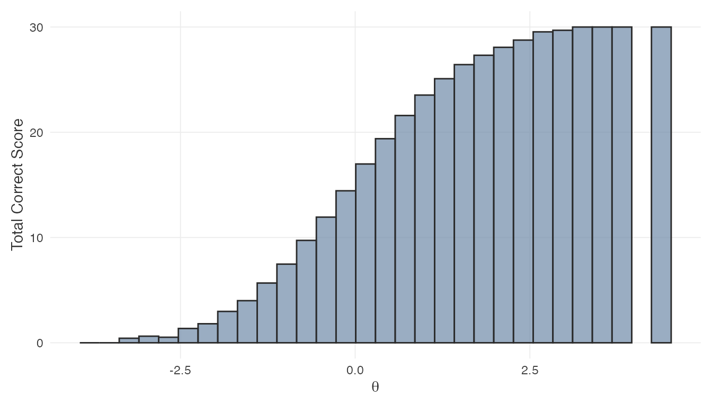
Item-level response times. Each panel shows the RT
density for one item. The logRT argument toggles between
seconds and the log scale:
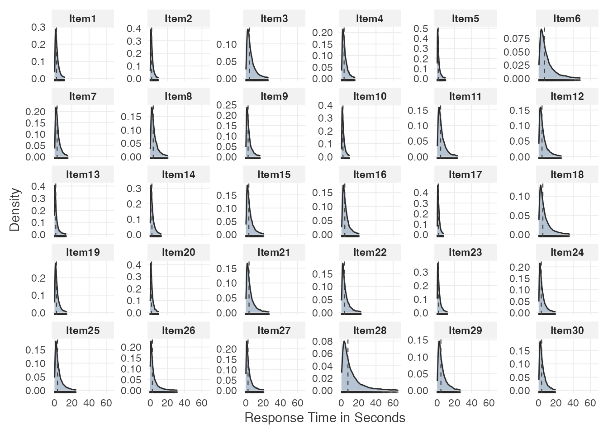
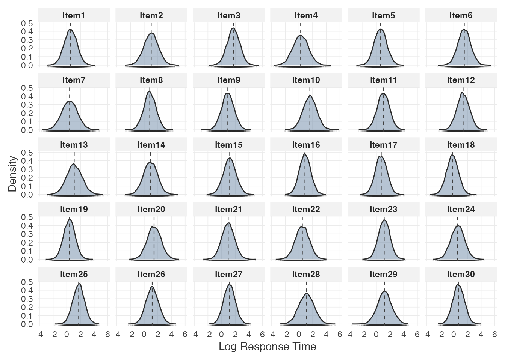
Person-level response times. Quantile reference lines summarize the distribution of mean response times across persons:
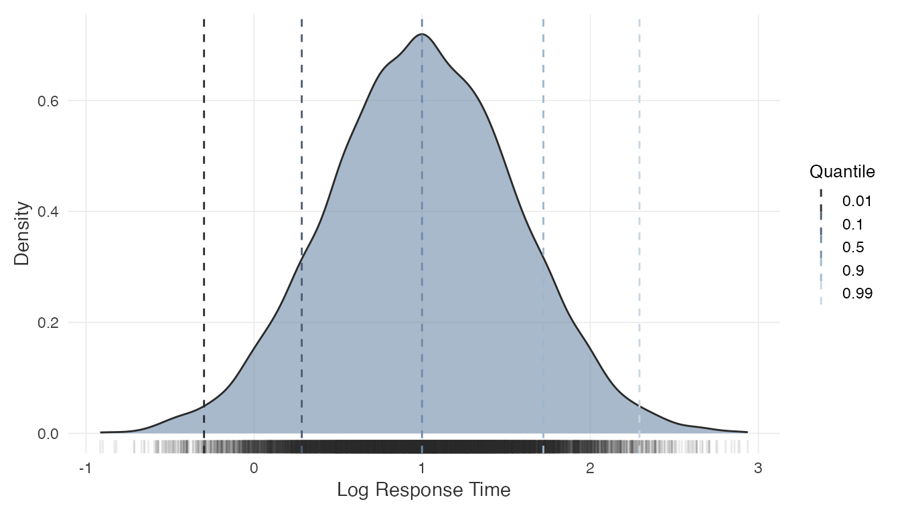
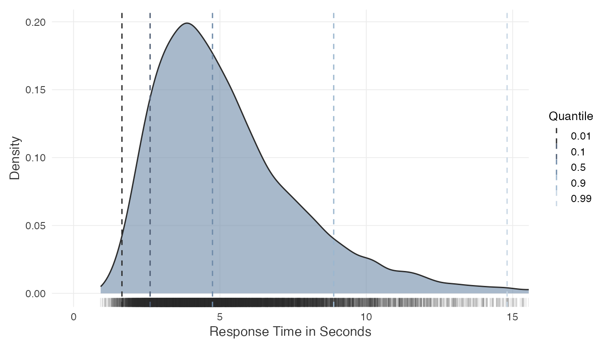
These plots help evaluate whether the assumed data-generating process produces plausible score and time distributions for the intended application. They may also inform adjustments to the input parameters before committing to a sample size.
2.5 Inspect estimation accuracy
The plot_estimation() function displays RMSE or bias as
a function of the true (simulated) parameter values at the minimum
.
This can quantify to what extent estimation accuracy varies
systematically across the parameter range. For instance, how much items
with extreme difficulty values tend to be estimated less precisely.
For item parameters:
plot_estimation(result$object, pars = "item", y.val = "rmse")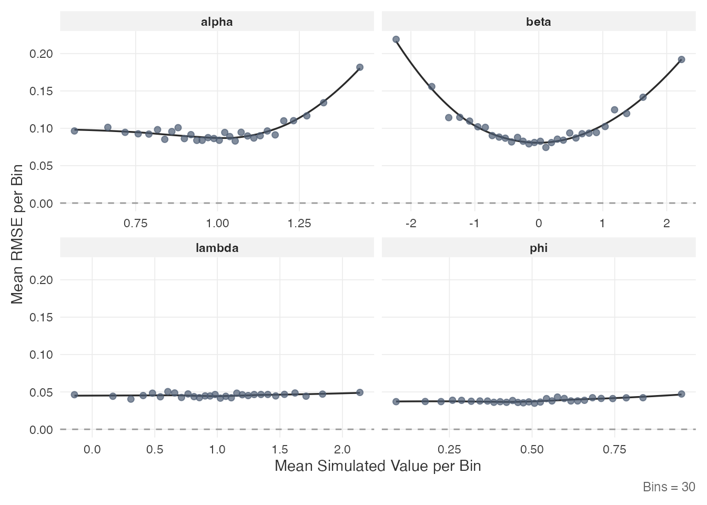
plot_estimation(result$object, pars = "item", y.val = "bias")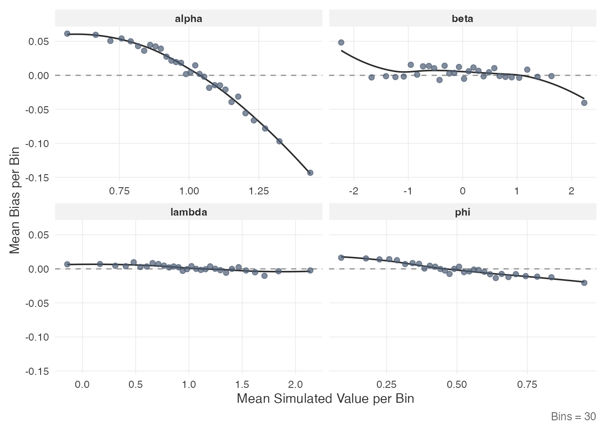
For person parameters:
plot_estimation(result$object, pars = "person", y.val = "rmse")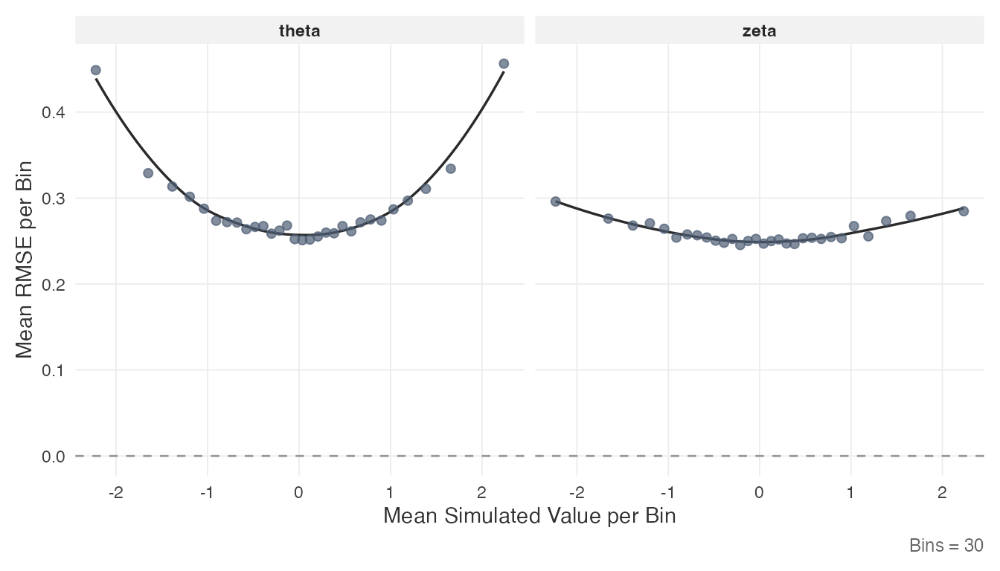
Each point represents the mean value within a quantile bin of the true parameter. The smooth line is a LOESS fit.
2.6 Inspect the power curve
The plot_power_curve() function fits a log-log
regression through the bisection trace and displays the relationship
between sample size and RMSE:
plot_power_curve(result$object, out.par = result$design$out.par,
thresh = result$design$thresh)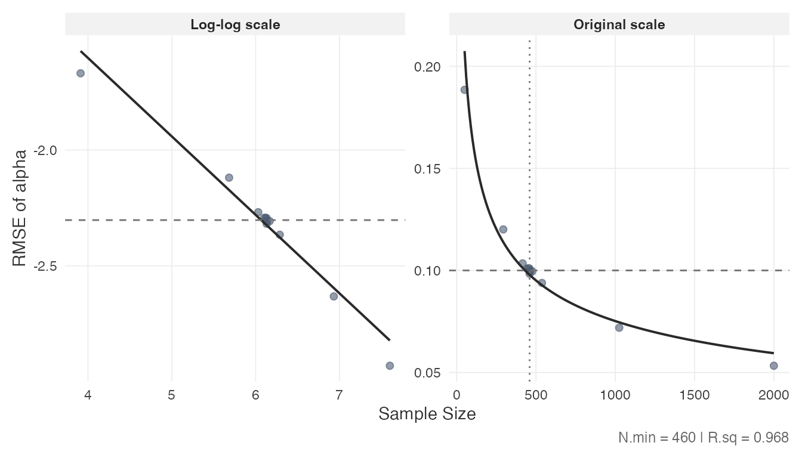
The dashed horizontal line marks the RMSE threshold; the dotted vertical line marks the minimum . The left panel shows the log-log fit; the right panel shows the same relationship on the original scale. The of the log-log regression is reported in the caption.
2.7 Inspect convergence diagnostics
Convergence of the MCMC chains can be assessed from the diagnostics stored in the result object. These are quantiles of the statistic (Vehtari et al., 2021) across Monte Carlo iterations:
rhat <- result$object$comp.rmse$rhat.dat
if (!is.null(rhat)) {
if (is.data.frame(rhat) || is.matrix(rhat)) {
round(rhat, 4)
}
}
#> alpha beta phi lambda sigma2
#> 50% 1.0030 1.0012 1.0001 1.0001 1.0001
#> 80% 1.0064 1.0033 1.0002 1.0002 1.0002
#> 90% 1.0105 1.0058 1.0003 1.0003 1.0003
#> 95% 1.0156 1.0093 1.0004 1.0004 1.0003Values of 1 indicate that the chains have mixed well. The rows represent quantiles (50th, 80th, 90th, 95th percentile); the columns correspond to item parameters.
3. Custom Simulations
When the intended design is not covered by the precomputed grid, the package provides two functions for running simulations directly:
-
comp_rmse()evaluates item parameter accuracy at a single, fixed sample size. -
optim_sample()runs the bisection optimizer to find the minimum sample size for a target RMSE threshold.
Both functions are computationally intensive (minutes to hours depending on settings) and benefit from parallel execution.
3.1 Setup
The simulation and estimation are parallelized over Monte Carlo
replications using the future framework. Set up a parallel
backend before calling either function:
3.2 Evaluate accuracy at a fixed N
comp_rmse() simulates data, fits the model, and computes
RMSE, MC SD, and bias for all item and person parameters at a specified
sample size:
rmse_result <- comp_rmse(
N = 200,
iter = 200,
K = 30,
mu.person = c(0, 0),
mu.item = c(1, 0, 0.5, 1),
meanlog.sigma2 = log(0.6),
cov.m.person = matrix(c(1, 0.4, 0.4, 1), ncol = 2),
cov.m.item = matrix(c(1, 0, 0, 0,
0, 1, 0, 0.4,
0, 0, 1, 0,
0, 0.4, 0, 1), ncol = 4),
sd.item = c(0.2, 1, 0.2, 0.5),
cor2cov.item = TRUE,
sdlog.sigma2 = 0,
XG = 5000,
burnin = 20,
seed = 1234,
keep.err.dat = TRUE,
keep.rhat.dat = TRUE
)
summary(rmse_result)Key arguments:
-
iter: number of Monte Carlo replications (simulated datasets). Higher values reduce the MC standard deviation of the RMSE estimate. -
XG: number of Gibbs sampler iterations per chain (4 chains are run per replication). -
keep.err.dat: ifTRUE, retains the full per-replication error data (needed forplot_estimation()with custom binning). IfFALSE, errors are pre-binned intoKquantile bins. -
keep.rhat.dat: ifTRUE, retains the matrix across replications. -
seed: passed tofuture.applyfor parallel-safe reproducibility.
The output has the same sspLNIRT.object class as
optim_sample() results and works with
summary(), plot_estimation(), and
print().
3.3 Optimize for the minimum sample size
optim_sample() wraps comp_rmse() in a
bisection loop. It accepts vectors for thresh and
out.par to simultaneously target multiple item
parameters:
custom_result <- optim_sample(
thresh = c(0.10, 0.15),
out.par = c("alpha", "beta"),
range = c(50, 2000),
iter = 200,
K = 30,
mu.person = c(0, 0),
mu.item = c(1, 0, 0.5, 1),
meanlog.sigma2 = log(0.6),
cov.m.person = matrix(c(1, 0.4, 0.4, 1), ncol = 2),
cov.m.item = matrix(c(1, 0, 0, 0,
0, 1, 0, 0.4,
0, 0, 1, 0,
0, 0.4, 0, 1), ncol = 4),
sd.item = c(0.2, 1, 0.2, 0.5),
cor2cov.item = TRUE,
sdlog.sigma2 = 0,
XG = 5000,
burnin = 20,
seed = 1234,
keep.err.dat = FALSE,
keep.rhat.dat = TRUE
)
summary(custom_result)The range argument sets the search interval for
.
The bisection halves the interval at each step, evaluating
comp_rmse() at the midpoint, until no further refinement is
possible (i.e., the interval width is one). The number of bisection
steps is approximately
, each requiring
a full comp_rmse() evaluation.
When multiple parameters are targeted, the bisection requires
all specified parameters to simultaneously fall below their
respective thresholds before narrowing the search interval, so the
resulting
satisfies all targets at once. This differs from the
get_sspLNIRT() approach, which looks up each parameter
independently and selects the bottleneck post hoc.
The result object supports the same inspection functions demonstrated in Section 2:
plot_estimation(custom_result, pars = "item", y.val = "rmse")
plot_power_curve(custom_result, out.par = "alpha", thresh = 0.10)3.4 Practical considerations
-
Computation time: a single
comp_rmse()call withiter = 200andXG = 5000can take minutes to hours depending on , , and available cores. The full bisection typically requires 10–13 evaluations, sooptim_sample()can take several hours. -
Parallelization: setting
future::plan(multisession)with multiple workers distributes replications across cores. The number of workers should match available cores. -
Reproducibility: the
seedargument ensures parallel-safe reproducibility via L’Ecuyer-CMRG streams. Pass an explicit integer for full reproducibility. -
Memory: with
keep.err.dat = TRUE, the full error arrays are retained in memory. For large and , setting this toFALSEreduces memory usage by pre-binning errors.
# Reset to sequential when done
plan(sequential)References
Fox, J.-P., Klotzke, K., & Simsek, A. S. (2023). R-package LNIRT for joint modeling of response accuracy and times. PeerJ Computer Science, 9, e1232. https://doi.org/10.7717/peerj-cs.1232
van der Linden, W. J. (2007). A hierarchical framework for modeling speed and accuracy on test items. Psychometrika, 72(3), 287–308. https://doi.org/10.1007/s11336-006-1478-z
Vehtari, A., Gelman, A., Simpson, D., Carpenter, B., & Bürkner, P.-C. (2021). Rank-normalization, folding, and localization: An improved for assessing convergence of MCMC (with discussion). Bayesian Analysis, 16(2), 667–718. https://doi.org/10.1214/20-BA1221